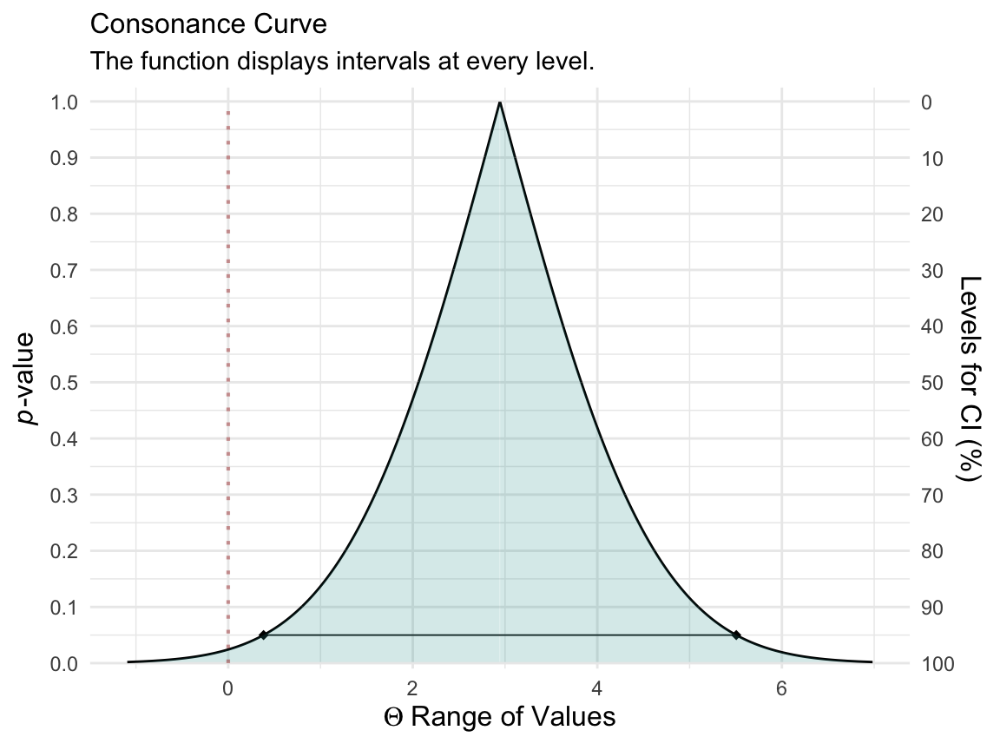
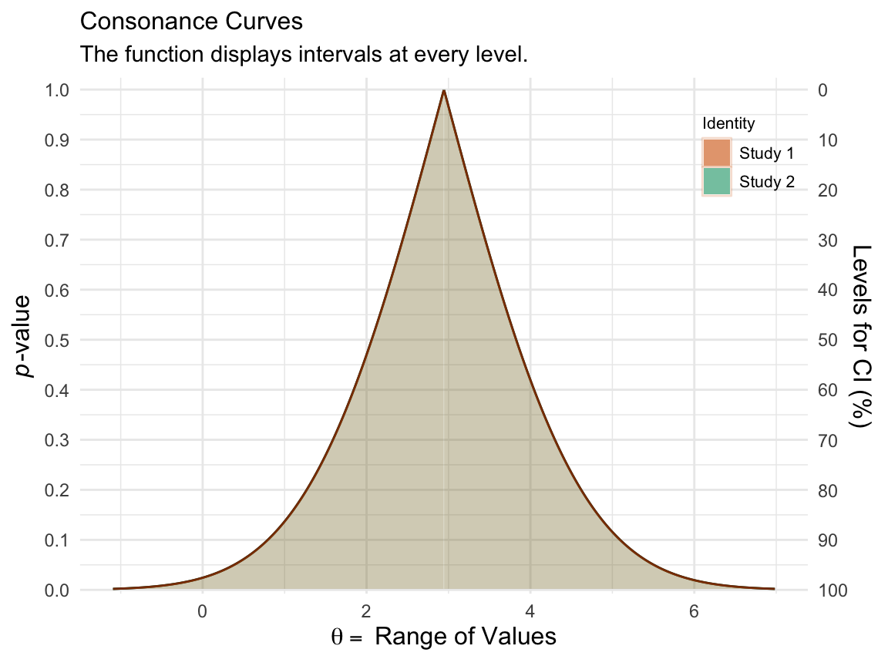

Simple Data Structures
Here, we’ll use an example dataset taken from the metafor website, which also comes preloaded with the metafor package.1
library(metafor) #> Loading required package: Matrix #> Loading 'metafor' package (version 2.4-0). For an overview #> and introduction to the package please type: help(metafor). library(concurve) library(ggplot2) dat.hine1989 #> study source n1i n2i ai ci #> 1 1 Chopra et al. 39 43 2 1 #> 2 2 Mogensen 44 44 4 4 #> 3 3 Pitt et al. 107 110 6 4 #> 4 4 Darby et al. 103 100 7 5 #> 5 5 Bennett et al. 110 106 7 3 #> 6 6 O'Brien et al. 154 146 11 4
I will quote Wolfgang here, since he explains it best,
"As described under help(dat.hine1989), variables n1i and n2i are the number of patients in the lidocaine and control group, respectively, and ai and ci are the corresponding number of deaths in the two groups. Since these are 2×2 table data, a variety of different outcome measures could be used for the meta-analysis, including the risk difference, the risk ratio (relative risk), and the odds ratio (see Table III). Normand (1999) uses risk differences for the meta-analysis, so we will proceed accordingly. We can calculate the risk differences and corresponding sampling variances with:
dat <- escalc(measure = "RD", n1i = n1i, n2i = n2i, ai = ai, ci = ci, data = dat.hine1989) dat #> study source n1i n2i ai ci yi vi #> 1 1 Chopra et al. 39 43 2 1 0.0280 0.0018 #> 2 2 Mogensen 44 44 4 4 0.0000 0.0038 #> 3 3 Pitt et al. 107 110 6 4 0.0197 0.0008 #> 4 4 Darby et al. 103 100 7 5 0.0180 0.0011 #> 5 5 Bennett et al. 110 106 7 3 0.0353 0.0008 #> 6 6 O'Brien et al. 154 146 11 4 0.0440 0.0006
"Note that the yi values are the risk differences in terms of proportions. Since Normand (1999) provides the results in terms of percentages, we can make the results directly comparable by multiplying the risk differences by 100 (and the sampling variances by \(100^{2}\)):
dat$yi <- dat$yi * 100 dat$vi <- dat$vi * 100^2
We can fit a fixed-effects model with the following
fe <- rma(yi, vi, data = dat, method = "FE")
Now that we have our metafor object, we can compute the consonance function using the curve_meta() function.
fecurve <- curve_meta(fe, cores = 1L)
Now we can graph our function.
ggcurve(fecurve[[1]], nullvalue = TRUE)

We used a fixed-effects model here, but if we wanted to use a random-effects model, we could do so with the following, which will use a restricted maximum likelihood estimator for the random-effects model
re <- rma(yi, vi, data = dat, method = "REML")
And then we could use curve_meta() to get the relevant list
recurve <- curve_meta(re, cores = 1L)
Now we can plot our object.
ggcurve(recurve[[1]], nullvalue = TRUE)

We could also compare our two models to see how much consonance/overlap there is
curve_compare(fecurve[[1]], recurve[[1]], plot = TRUE) #> [1] "AUC = Area Under the Curve" #> [[1]] #> #> #> | AUC 1| AUC 2| Shared AUC| AUC Overlap (%)| Overlap:Non-Overlap AUC Ratio| #> |-----:|-----:|----------:|---------------:|-----------------------------:| #> | 2.084| 2.084| 2.084| 100| Inf| #> #> [[2]]

The results are practically the same and we cannot actually see any difference, and the AUC % overlap also indicates this.
Complex Data Structures
concurve can also handle complex data structures from metafor that are clustered.
### copy data from Berkey et al. (1998) into 'dat' dat <- dat.berkey1998 ### construct list of the variance-covariance matrices of the observed outcomes for the studies V <- lapply(split(dat[, c("v1i", "v2i")], dat$trial), as.matrix) ### construct block diagonal matrix V <- bldiag(V) ### fit multivariate model res <- rma.mv(yi, V, mods = ~ outcome - 1, random = ~ outcome | trial, struct = "UN", data = dat) ### results based on sandwich method (a <- robust(res, cluster = dat$trial)) #> #> Number of outcomes: 10 #> Number of clusters: 5 #> Outcomes per cluster: 2 #> #> Test of Moderators (coefficients 1:2): #> F(df1 = 2, df2 = 3) = 41.6138, p-val = 0.0065 #> #> Model Results: #> #> estimate se tval pval ci.lb ci.ub #> outcomeAL -0.3392 0.1010 -3.3597 0.0437 -0.6605 -0.0179 * #> outcomePD 0.3534 0.0675 5.2338 0.0136 0.1385 0.5683 * #> #> --- #> Signif. codes: 0 '***' 0.001 '**' 0.01 '*' 0.05 '.' 0.1 ' ' 1 l <- concurve::curve_meta(res, method = "uni", robust = TRUE, cluster = dat$trial, adjust = TRUE, steps = 1000, cores = 1L) ggcurve(data = l[[1]], type = "c") + ggplot2::theme_minimal()

The interval function is quite narrow because there were so many iterations that were set by us.
library(simstudy) library(parallel) library(nlme) library(data.table) library(metafor) library(concurve) defS <- defData(varname = "a.k", formula = 3, variance = 2, id = "study") defS <- defData(defS, varname = "d.0", formula = 3, dist = "nonrandom") defS <- defData(defS, varname = "v.k", formula = 0, variance = 6, dist= "normal") defS <- defData(defS, varname = "s2.k", formula = 16, variance = .2, dist = "gamma") defS <- defData(defS, varname = "size.study", formula = ".3;.5;.2", dist = "categorical") defS <- defData(defS, varname = "n.study", formula = "(size.study==1) * 20 + (size.study==2) * 40 + (size.study==3) * 60", dist = "poisson") defI <- defDataAdd(varname = "y", formula = "a.k + x * (d.0 + v.k)", variance = "s2.k") RNGkind(kind = "L'Ecuyer-CMRG") set.seed(1031) ds <- genData(12, defS) ds #> study a.k d.0 v.k s2.k size.study n.study #> 1: 1 4.745069 3 -5.1399796 16.275358 2 38 #> 2: 2 1.983020 3 -3.2693291 13.976232 3 66 #> 3: 3 1.865846 3 1.9742469 8.332148 2 40 #> 4: 4 4.235730 3 -3.2126873 11.100117 2 40 #> 5: 5 4.246219 3 -0.5858786 13.765175 3 57 #> 6: 6 3.899617 3 4.6808278 7.532707 2 41 #> 7: 7 3.059236 3 -5.9924638 7.817771 1 14 #> 8: 8 2.324586 3 5.7588246 10.970013 3 56 #> 9: 9 3.857260 3 -1.1081854 24.039016 3 75 #> 10: 10 4.308413 3 -1.9081253 14.084537 1 24 #> 11: 11 1.607899 3 0.2178001 8.271145 2 48 #> 12: 12 3.717728 3 1.8818612 11.274497 3 67 dc <- genCluster(ds, "study", "n.study", "id", ) dc <- trtAssign(dc, strata = "study", grpName = "x") dc <- addColumns(defI, dc) d.obs <- dc[, .(study, id,s2.k, x, y)] d.obs <- as.data.frame(d.obs) res <- rma.mv(yi = y, V = s2.k, W = NULL, mods = ~ factor(study) + factor(x), random = ~ factor(x) | study, struct="CS", data = d.obs, method = "REML") a <- curve_meta(x = res, measure = "default", method = "mv", parm = "factor(x)1", cores = 1L) ggcurve(a[[2]], type = "cdf")

Session info
#> R version 4.0.2 (2020-06-22)
#> Platform: x86_64-apple-darwin17.0 (64-bit)
#> Running under: macOS Catalina 10.15.6
#>
#> Matrix products: default
#> BLAS: /Library/Frameworks/R.framework/Versions/4.0/Resources/lib/libRblas.dylib
#> LAPACK: /Library/Frameworks/R.framework/Versions/4.0/Resources/lib/libRlapack.dylib
#>
#> Random number generation:
#> RNG: L'Ecuyer-CMRG
#> Normal: Inversion
#> Sample: Rejection
#>
#> locale:
#> [1] en_US.UTF-8/en_US.UTF-8/en_US.UTF-8/C/en_US.UTF-8/en_US.UTF-8
#>
#> attached base packages:
#> [1] parallel stats graphics grDevices utils datasets methods
#> [8] base
#>
#> other attached packages:
#> [1] data.table_1.13.0 nlme_3.1-148 simstudy_0.1.16 ggplot2_3.3.2
#> [5] concurve_2.7.0 metafor_2.4-0 Matrix_1.2-18
#>
#> loaded via a namespace (and not attached):
#> [1] tidyr_1.1.1 splines_4.0.2 carData_3.0-4
#> [4] ProfileLikelihood_1.1 assertthat_0.2.1 highr_0.8
#> [7] cellranger_1.1.0 yaml_2.2.1 bcaboot_0.2-1
#> [10] gdtools_0.2.2 pillar_1.4.6 backports_1.1.8
#> [13] lattice_0.20-41 glue_1.4.1 uuid_0.1-4
#> [16] digest_0.6.25 ggsignif_0.6.0 colorspace_1.4-1
#> [19] htmltools_0.5.0 pkgconfig_2.0.3 broom_0.7.0
#> [22] haven_2.3.1 xtable_1.8-4 purrr_0.3.4
#> [25] scales_1.1.1 km.ci_0.5-2 openxlsx_4.1.5
#> [28] officer_0.3.12 rio_0.5.16 KMsurv_0.1-5
#> [31] tibble_3.0.3 farver_2.0.3 generics_0.0.2
#> [34] car_3.0-8 ellipsis_0.3.1 ggpubr_0.4.0
#> [37] withr_2.2.0 survival_3.2-3 magrittr_1.5
#> [40] crayon_1.3.4 readxl_1.3.1 memoise_1.1.0
#> [43] evaluate_0.14 fs_1.5.0 MASS_7.3-51.6
#> [46] rstatix_0.6.0 forcats_0.5.0 xml2_1.3.2
#> [49] foreign_0.8-80 tools_4.0.2 hms_0.5.3
#> [52] lifecycle_0.2.0 stringr_1.4.0 flextable_0.5.10
#> [55] munsell_0.5.0 zip_2.0.4 compiler_4.0.2
#> [58] pkgdown_1.5.1 survminer_0.4.8 pbmcapply_1.5.0
#> [61] systemfonts_0.2.3 rlang_0.4.7 grid_4.0.2
#> [64] rstudioapi_0.11 labeling_0.3 base64enc_0.1-3
#> [67] rmarkdown_2.3 boot_1.3-25 gtable_0.3.0
#> [70] abind_1.4-5 curl_4.3 R6_2.4.1
#> [73] zoo_1.8-8 gridExtra_2.3 knitr_1.29
#> [76] dplyr_1.0.1 survMisc_0.5.5 rprojroot_1.3-2
#> [79] desc_1.2.0 stringi_1.4.6 Rcpp_1.0.5
#> [82] vctrs_0.3.2 tidyselect_1.1.0 xfun_0.16References
1. Viechtbauer W. Conducting Meta-Analyses in R with the Metafor Package.; 2010. https://www.jstatsoft.org/v36/i03/.